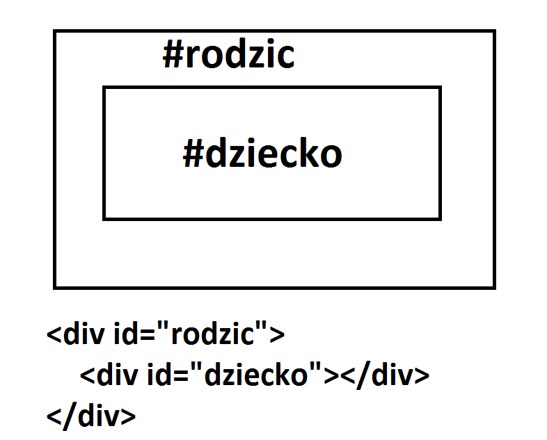
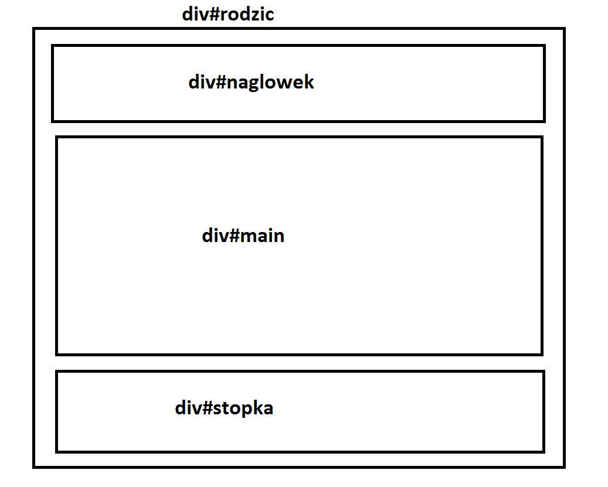
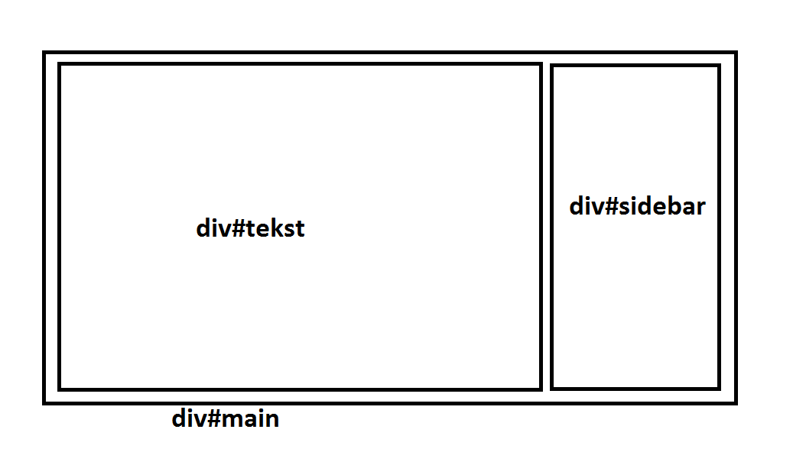
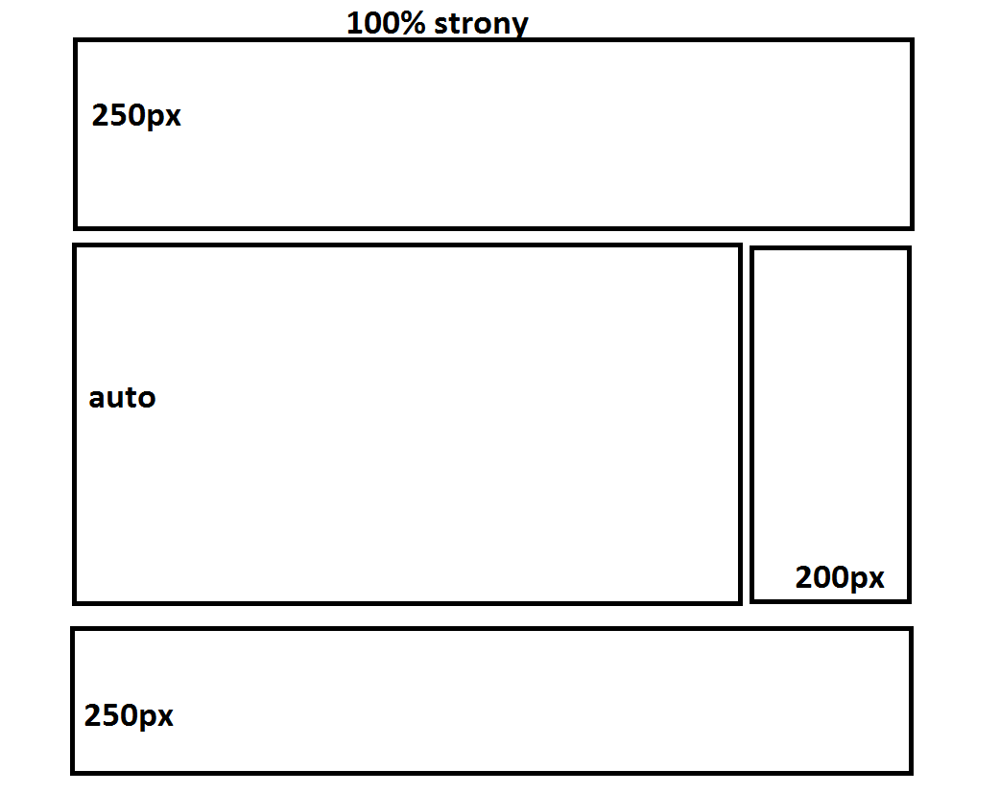
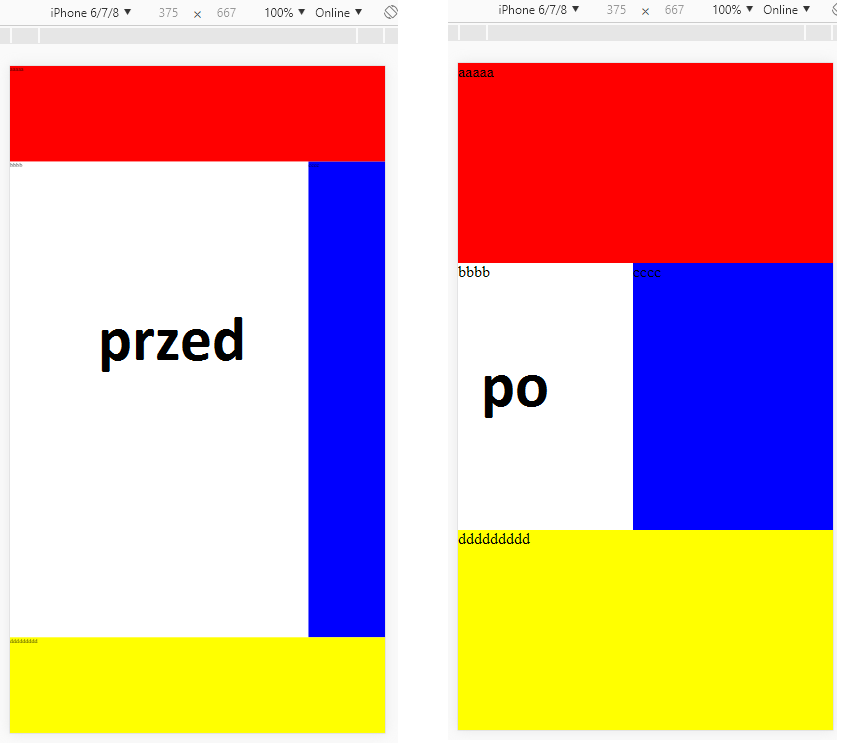
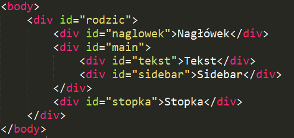
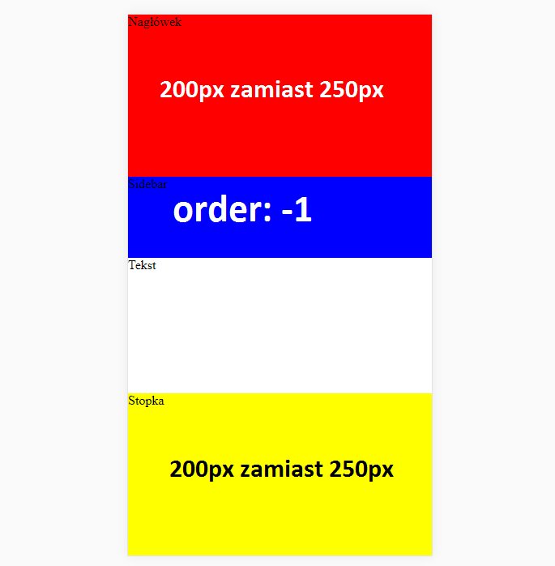

Flexbox pozwala na szybkie budowanie responsywnej strony internetowej.
Jest typem układu w kontenerze.
Na układ możemy wpływać atrybutami zarówno u rodzica, jak i u dzieci.
Atrybuty rodzica:
Aby skorzystać z flexboxa, najpierw kontenerowi zawierającemu dzieci musimy nadać atrybut:display: flexKontener z flexboxem pozwala na rozmieszczenie dzieci w kierunku jakim chcemy [niekoniecznie takim, w jakim są ustalone dzieci w HTMLu]:
flex-direction: column (domyślnie) | row | column-reverse | row-reverseAby dzieci przemieszczały się na następną linię w przypadku braku miejsca (zalecane), możemy nadać atrybut:
flex-wrap: wrap lub domyślnie nowrapDo wyrównywania dzieci na osi horyzontalnej używamy:
justify-content: flex-start | flex-end | center | space-between | space-around | space-evenly;Natomiast na osi wertykalnej:
align-items: flex-start | flex-end | center | baseline | stretch;Align-items służy do wyrównywania dzieci znajdujących się na jednej linii, natomiast align-content wyrównuje poszczególne linie, gdy zostanie dodatkowe miejsce na osi Y.
oraz align-content: flex-start | flex-end | center | space-between | space-around | stretch;
Atrybuty dziecka:
Atrybut order [liczba całkowita] pozwala nam na ułożenia dzieci w dowolnej kolejności poprzez CSS.Flex-grow [liczba całkowita] ustala, czy dziecko może wykorzystać wolną przestrzeń, aby zwiększyć swoją szerokość.
Flex-shrink [liczba całkowita] ustala, czy dziecko może się zmniejszyć, w przypadku braku wolnego miejsca.
Natomiast flex-basis to domyślna szerokość dziecka, przed rozdzieleniem wolnego miejsca.
Zazwyczaj powinniśmy korzystać z atrybutu flex, który łączy trzy w jednym:
flex: flex-grow flex-shrink flex-basis [domyślnie flex: none]
Przykłady:
Gdy dziecko ma zajmować co najmniej 400px szerokości lub więcej, używamy na nim:
flex: 1 0 400pxGdy dziecko ma zajmować 2 razy więcej szerokości od innych, ustawiamy mu:
flex: 2 1 auto;A innym dzieciom:
flex: 1 1 auto;Przejdźmy jednak do konkretnego przykładu, czyli typowego układu strony.
Budowanie działającego układu strony
 Div#rodzic jest tutaj rodzicem dla trzech divów – nagłówka, main oraz stopki. Powinny się układać w kolejności kolumny [od góry do ołu]. Załóżmy, że strona powinna zajmować co najmniej cały ekran (100 vh – viewport height).Najpierw pozbądźmy się wszystkich marginów, paddingów, itd. – to dobra praktyka:
* {Następnie ustalamy css dla rodzica:
margin: 0;
padding: 0;
border: 0;
box-sizing: border-box;
}
div#rodzic { Ok, załóżmy, że nagłówek ma być wysoki na 250px, tak samo jak stopka.
display: flex;
flex-direction: column;
width: 100%;
min-height: 100vh;
}
div#naglowek, div#stopka {Dodajmy jeszcze do naszej strony sidebar. Będziemy musieli zmodyfikować srodkowy div, aby zawierał nasz pasek boczny.
flex: 0 0 250px;
width: 100%;
}
Div#main stanie się wtedy dzieckiem div#rodzic, ale jednocześnie zostanie rodzicem dwóch elementów, div#tekst oraz div#sidebar. Są one ułożone w formie rowu.

div#main {Wynik całości powinien być jak na obrazku z prawej strony.
/* Atrybuty jako dziecka div#rodzic: */
flex: 1 1;
width: 100%;
/* Atrybuty jako rodzic div#tekst i div#sidebar */
display: flex;
flex-direction: row;
}
div#tekst {
flex: 1 1 100%;
}
div#sidebar {
flex: 1 0 200px;
}

Dostosowanie do komórek
Przeglądarki mobilne często sprawiają, że strona wydaje się mała. Renderują stronę w wyższej rozdzielczości a następnie downscalują ją dla użytkownika. Sprawia to, że strona wygląda jak na pierwszym obrazku. Możemy to naprawić wstawiając jedną linijkę do tagu head:Wymusza to podobny wygląd strony na wszystkich przeglądarkach.
Dodatkowo możemy zastosować tzw. media query. Jest to kod CSS, który wykona się po spełnieniu danego warunku - w tym przyadku wykona się, gdy szerokość przeglądarki jest mniejsza od 500px, albo inaczej - maksymalna szerokość to 500px.
Co możemy zrobić, aby zamienić tą stronę na lepiej czytelną na komórkach?
1. Przenieść sidebar gdzie indziej - zajmuje on za dużo miejsca
2. Skrócić nagłówek i stopkę z 250px na 200px - j.w.
Do tego możemy konsekwentnie wykonać trzecią czynność:
3. Przenieść sidebar, aby znajdował się pod nagłówkiem.
W przeciwnym razie znajdzie się na dole strony [zgodnie z układem HTML].

@media only screen and (max-width: 500px) { flex-direction: column w div#main sprawia, że div#tekst oraz div#sidebar zamiast znajdować się obok siebie, znajdują się pod sobą. Punkt 1 wypełniony.
div#main {
flex-direction: column;
}
div#sidebar {
order: -1;
flex: 0 0 100px;
}
div#naglowek, div#stopka {
flex: 0 0 200px;
}
}
flex: 0 0 200px w nagłówku i stopce zmniejsza ich wysokość o 50px - poprzednio było 250px. Punkt 2 wypełniony.
order: -1 w div#sidebar sprawia, że jest pierwszy w kolejności, czyli znajduje się teraz przed div#tekst. Do tego zmniejszamy jego wysokość. Punkt 3 wypełniony.
Strona wygląda jak na załączonym obrazku na komórce, posiadając swój normalny layout w wersji komputerowej.
Zobacz w akcji
Odnośniki: Atrybuty zaprezentowane w ładniejszej formie
Przykład: http://www.kaszkowiak.org/dwa/index.html